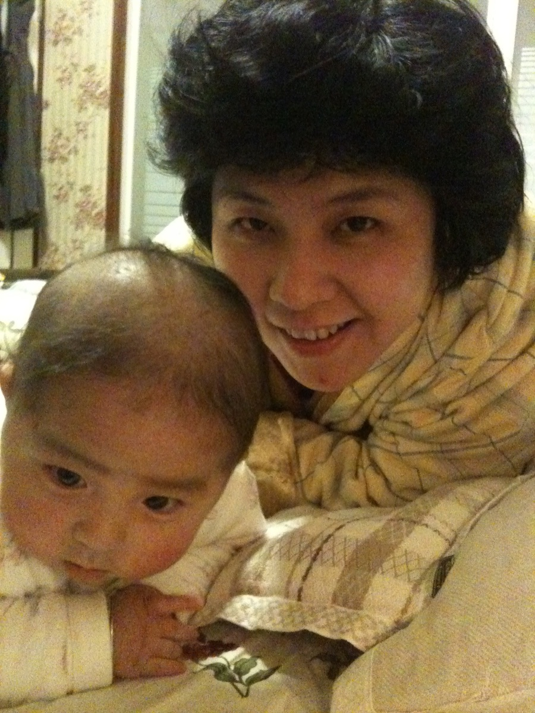

第三章 声音
2011年1月1日
母亲带他去看同事阿姨，没看成。
妈妈今天下午带我去看同事阿姨，未成，爸爸带我去万菱广场修遥控直升飞机，妈妈因为商家收钱有些不高兴，差不多想要吵架了。其实，和气生财，花点钱买个顺心，自已开心，吃些小亏未必是坏事，这点还是爸看得开。
今注：这一天是新年，母亲不高兴，父亲在日记里劝了一句。


2011年2月9日
年初八。爷爷奶奶和姑姑一家，年初六走了。
时间过得真快，一转眼就是年初八了，爷爷奶奶和姑姑一家年初六就离开广州了，他们是坐火车走的，离开的时候，爸爸妈妈带我去广州火车站送他们，大伯和姐姐他们也来了，爷爷他们带了好多行李，除了来的时候自己带来的之外，妈妈也给他们准备了不少东西，包括在路上吃的，大大小小有九个之多，不过，好在他们人多，还可以分担些。离开的时候，大家都有些感伤，尤其是爷爷奶奶，他们舍不得孙子嘛，毕竟在一起相处了快3个月哦，爷爷奶奶眼圈都红了。
今注：爷爷奶奶在广州住了将近三个月。
2011年2月17日
宝宝叫大大
今注：这一天只有五个字，和一段录音。
2011年3月18日
母亲生日，她不高兴。
今天是妈妈的生日，但是她不开心，一早我就醒了，我和爸爸笑，对她就没有表情，好像我被她掏鼻孔掏怕了，对妈妈还心有余悸。到公公家报道后，爸爸妈妈去吃早餐，但是爸爸没有按照妈妈的意思办，她就开始一路唠叨起来……爸爸最讨厌人在吃饭的时候说东道西，他喜欢吃饭说开心话、开胃，还有就是不喜欢一大早就给人数落，一天都不开心……不过，他知道，下午订得生日蛋糕就把问题解决了，女人好面子，也好里子，这个他知道。况且还有我呢！！
今注：生日蛋糕是下午订的。这句话后面，父亲加了两个感叹号。
2011年2月26日
他的脸还没好。
今天爸爸出差到从化温泉，我和妈妈在家，这几天我都在外婆家上班，阿姨上周扭了腰，这周来不了，我和外婆公公一起，他们很辛苦。我的花猫脸还么有好，妈妈这周开始给我吃羊奶，希望会好转。
今注："花猫脸"是母亲的叫法，日记里原样记下。